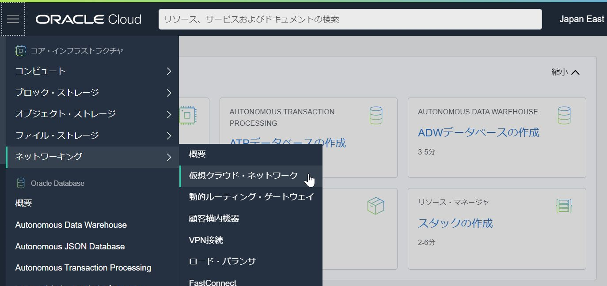
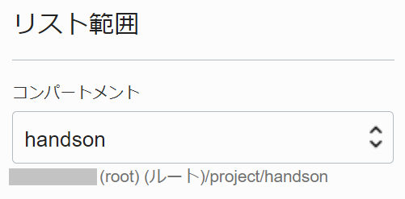
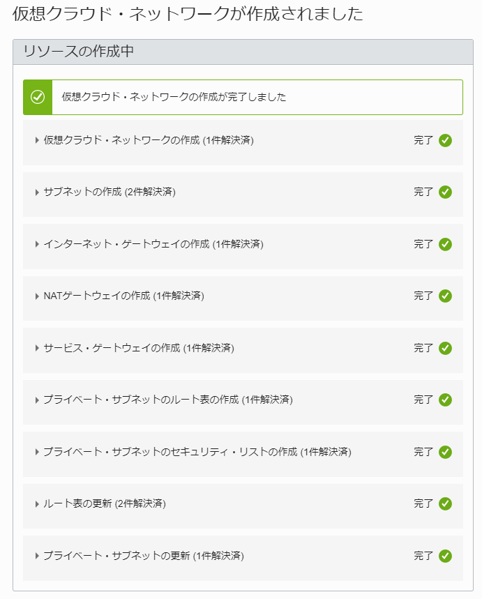
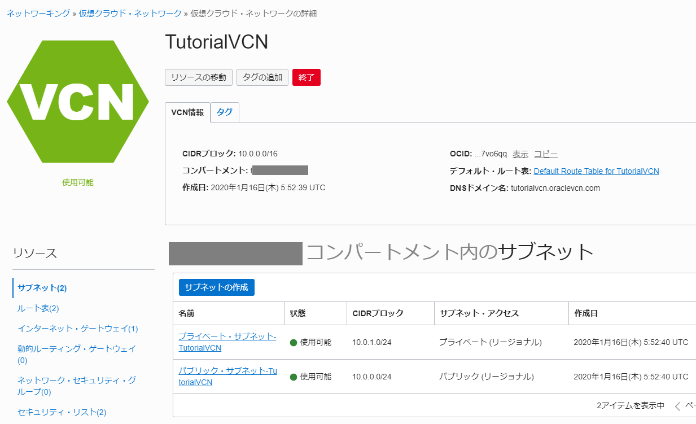
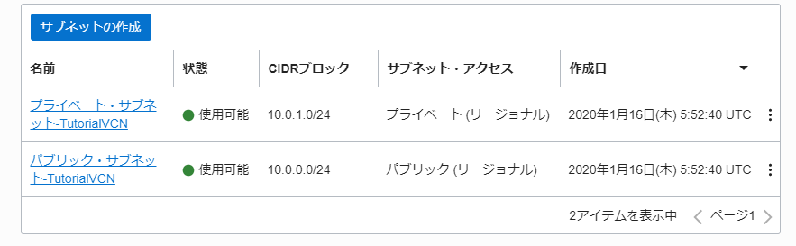
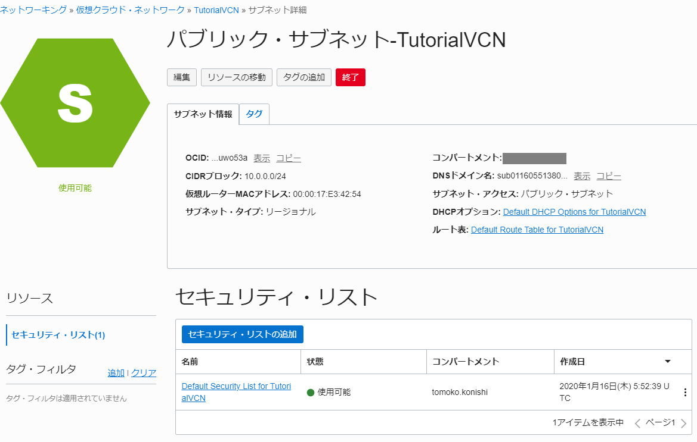

チュートリアル一覧に戻る : Oracle Cloud Infrastructure チュートリアル
Oracle Cloud Infrastructure を利用するにあたっての最初のステップは、仮想クラウド・ネットワーク(Virtual Cloud Network : VCN) を作成することです。ネットワークの管理者が最初に仮想ネットワークを作ることで、その後インスタンスの管理者やストレージの管理者が、作成した仮想ネットワークの構成やルールに従ってコンポーネントを配置することができるようになります。
このチュートリアルでは、コンソール画面から仮想クラウド・ネットワーク(VCN)を1つ作成し、その構成について確認してくことで、OCIのネットワークに対する理解を深めます。
所要時間 : 約15分
前提条件 :
- Oracle Cloud Infrastructure の環境(無料トライアルでも可) と、管理権限を持つユーザーアカウントがあること
- その1 - OCIコンソールにアクセスして基本を理解するを完了していること
注意 : チュートリアル内の画面ショットについては Oracle Cloud Infrastructure の現在のコンソール画面と異なっている場合があります
目次：
参考動画：本チュートリアルの内容をベースとした定期ハンズオンWebinarの録画コンテンツです。操作の流れや解説を動画で確認したい方はご参照ください。
1. 仮想クラウドネットワーク(VCN)とは?
仮想クラウド・ネットワークの作成は、基本的にはオンプレミスでよく利用されるネットワークの各コンポーネントの仮想バージョンをクラウド上で構築していくようなものをイメージしていただくとわかりやすいと思います。
仮想クラウド・ネットワークは以下のようなコンポーネントから構成されます。
- サブネット - 仮想ネットワークを構成するIPv4のサブネット
- 仮想NIC - インスタンスにアタッチされ、サブネットに接続する仮想的なネットワーク・インターフェース・カード
- プライベートIPアドレス - 仮想NICにアサインされるIPアドレス
- インターネット・ゲートウェイ - VCNとインターネットとを接続するゲートウェイ
- 動的ルーティング・ゲートウェイ(DRG) - VPNやFastConnect(閉域網/専用線接続サービス)によってオンプレミス・ネットワークなどと接続するゲートウェイ
- ローカル・ピアリング・ゲートウェイ(LPG) - 他のVCNと接続するゲートウェイ
- NATゲートウェイ - インターネットに到達する必要があるが、インターネットからは到達できないようにしたい場合
- サービス・ゲートウェイ - VCN外のOracle Cloudサービス(パブリックIPアドレスでアクセスするサービス)にプライベートに接続可能
- ルート表 - VCN/サブネットのルーティングを行う仮想ルーターに設定するルーティング・テーブル
- セキュリティ・リスト - VCN/サブネットの仮想ファイアウォールに設定するルール
- ネットワーク・セキュリティ・グループ - 仮想ファイアウォールの役割を持つ新たな機能で、セキュリティ・リストよりもより細やかな設定が可能
- DHCPオプション - インスタンスがDHCPサーバーから取得する情報の設定
2. 仮想クラウド・ネットワークの作成
仮想クラウド・ネットワークを作成します。今回は、予め設定されているテンプレート構成をもとに、付随するネットワーク・コンポーネントも一度に作成する VCNウィザード を利用して作成していきます。（すべてカスタムで作成することも可能です。）
-
コンソールメニューから
ネットワーキング→仮想クラウド・ネットワークを選択し、VCNウィザードボタンを押します。

※この際、左下の ”リスト範囲” でリソースを 作成したいコンパートメントを選択していること を確認してください。ここでは handson コンパートメントを作成して使用しています。
-
画面左下のリスト範囲

-
-
立ち上がった VCNウィザード ウィンドウで、デフォルトの ”インターネット接続性を持つVCN” を選択した状態で
VCNウィザードの起動をクリックします。このタイプを選択すると、以下のコンポーネントが作成されます。-
VCN、パブリック・サブネット、プライベート・サブネット、インターネット・ゲートウェイ(IG)、NATゲートウェイ(NAT)、サービス・ゲートウェイ(SG)

-
-
インターネット接続性を持つVCNの作成 ウィンドウに以下の項目を入力し、
次ボタンを押します-
基本情報
-
VCN名 - 任意 (画面では TutorialVCN と入力しています)
-
コンパートメント - デフォルトで現在のコンパートメントが選択されています。もし別のコンパートメントに作成したい場合は選択します。

-
-
VCNとサブネットの構成
-
VCN CIDRブロック - デフォルトの 10.0.0.0/16 のまま。
-
パブリック・サブネットCIDRブロック - デフォルトの 10.0.0.0/24 のまま。
-
プライベート・サブネットCIDRブロック - デフォルトの 10.0.1.0/24 のまま。

-
-
-
次の 確認および作成 画面で、これから作成されるリソースを確認し、
作成ボタンをクリックします。 -
仮想クラウド・ネットワークが作成されます。

-
左下の、
仮想クラウドネットワークの表示ボタンをクリックし、作成されたVCNのページを表示します。
3. 作成した仮想クラウド・ネットワークの確認
作成した仮想クラウド・ネットワーク(VCN)の詳細を確認し、どのようなコンポーネントが作成されているかを理解します。
-
コンソールで、先ほど作成した TutorialVCN のリンクをクリックし、詳細画面を表示します
-
上部に表示されている 仮想クラウド・ネットワークの概要情報を確認します
アドレス空間が 10.0.0.0/16 で、ネットワークのDNSドメイン名が tutorialvcn.oraclevcn.com であることを確認します

Note
これらの設定は、VCNウィザードでテンプレートに従って自動的に作成されたものです
-
下部には、作成されたリソースが表示されています。 パブリック・サブネットとプライベート・サブネットの2つが作成されていることを確認します。どちらもリージョナル・サブネットです。 まず、”パブリック・サブネット-<VCN名>” のリンクをクリックし、サブネットの詳細画面を開きます。

-
”パブリック・サブネット-<VCN名>” の画面で、このサブネットに設定されているセキュリティ・リスト、ルート表、DHCPオプションを確認できます。これらのコンポーネントは、VCN内に複数作成でき、各サブネット単位で割り当てます。 セキュリティ・リストは Default Security List for <VCN名>、ルート表は Default Route Table for <VCN名>、DHCPオプションは Default DHCP Options for <VCN名> が設定されていることがわかったので、これらの中身を確認していきます。

Note
作成されているサブネットはテンプレートに従って自動的に作成されたものです。もし異なる内容のサブネットを作成したい場合には、この画面から作成されたサブネットを終了(Terminate)し、新しいサブネットを作成することができます。
-
左側のサブメニューで ”インターネット・ゲートウェイ” を選択し、作成済のインターネット・ゲートウェイを確認します インターネット・ゲートウェイが1つ作成されています。

-
左側のサブメニューで ”ルート表” を選択し、作成済のルート表を確認します。Default Route Tableと、プライベート・サブネット用のルート表の2つが作成されていることを確認します。

-
ルート表のうち、Default Route Table for <VCN名> リンクをクリックし、作成されているルート表の詳細を確認します。
0.0.0.0/0 に対するルート(デフォルトルート)として、インターネット・ゲートウェイ-<VCN名> がターゲットに定義されていることを確認します。

-
左側のサブメニューで ”インターネット・ゲートウェイ” を選択し、作成済のインターネット・ゲートウェイを確認します。インターネット・ゲートウェイが1つ作成されています。

-
次に、ページ上部の ”VCN名” のリンクを押して画面をもどり、次に左側サブメニューから ”セキュリティ・リスト” を選択します 下部に作成済セキュリティ・リストが表示されるので、Default Security List for <VCN名> リンクをクリックし、詳細を表示します

-
Default Security List for <VCN名> の画面で、作成済みのセキュリティ・リストに設定されているルールの内容を確認します

イングレス・ルール (インバウンドのルール) として、以下のステートフル・ルールが定義され、またステートレス・ルールは定義されていないことがわかります
-
パブリック・インターネット(0.0.0.0/0) からの ssh(TCP/22) に対する接続の許可
-
パブリック・インターネット(0.0.0.0/0) からのICMP通信に対してはタイプ3(Destination Unreachable)のコード4(Fragmentation Needed and Don’t Fragment was Set)を返答
-
TestVCN 内(10.0.0.0/16) からのICMP通信に対してはタイプ3(Destination Unreachable)を返答
Note
ICMPのコードおよびタイプの詳細については IANAのサイト をご覧ください
-
-
ページ左側のサブメニューから ”エグレス・ルール” を選択し、定義済の Egress Rule (アウトバウンドのルール) の内容を確認します

エグレス・ルール としては、パブリック・インターネット(0.0.0.0/0) に対する全てのステートフル通信が許可されていることがわかります
-
ページ上部の ”VCN名” のリンクを押して画面をもどり、次にページ左側のサブメニューから ”DHCPオプション” を選択します 下部に作成済のDHCPオプションが表示されるので、 Default DHCP Options for <VCN名> リンクをクリックし、詳細を表示します DHCPのオプションとして、リゾルバーの設定がインターネットおよびVNC内の名前解決に、検索ドメインがVCNのDNSドメイン名(tutorialvcn.oraclevcn.com)に設定されていることを確認します

-
次に、手順4以降と同様に、プライベート・サブネットに設定されているルート表、セキュリティ・リストもどのような設定になっているかを確認しましょう。プライベート・サブネットの場合は、インターネット・ゲートウェイ経由で外部アクセスをすることはできないので、NATゲートウェイおよびサービス・ゲートウェイが設定されていることがわかります。
これで、この章の作業は終了です。
この章では、TutorialVCN という仮想クラウド・ネットワークをひとつ作成し、デフォルトで作成されている付随コンポーネントの設定の詳細を確認しました。
今回は VCNウィザード という方法で インターネット接続性を持つVCN を作成しましたが、作成されたコンポーネントは自由に変更、削除することができます。また今回は使わなかった 仮想クラウド・ネットワークの作成 の方法を使用すると、付随するコンポーネントを手動で作成することも可能です。
用途に応じて適切なオプションで仮想クラウド・ネットワーク(VCN)を作成するようにしてください。
チュートリアル一覧に戻る : Oracle Cloud Infrastructure チュートリアル